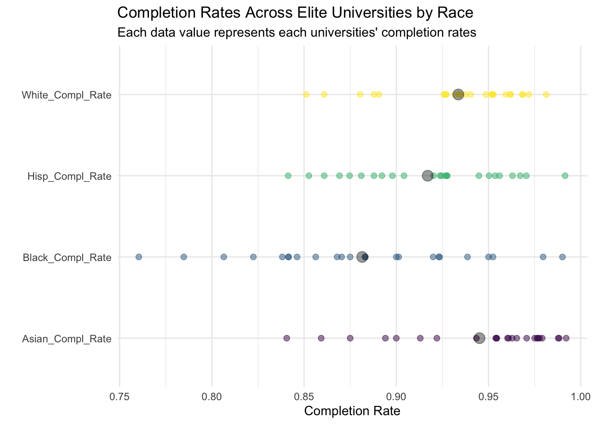

Does the American Dream Exist in Higher Education?
Analyzing the Interplay of Racial Composition, Socioeconomic Status, and Post-Grad Earnings in Higher Education

Introduction
THE AMERICAN DREAM: the shiny ideal that America is the land of opportunity and social mobility, and every person, regardless of their race, gender, and socioeconomic status, has the opportunity to climb the social ladder and succeed with enough hard work and determination. Perpetuating the idea of a colorblind society, perhaps any skew in data - certain racial groups having higher incarceration rates or higher poverty levels - can simply be attributed to just that: they didn’t work hard enough. They were given an opportunity for social mobility and failed to seize it. We must ask ourselves: Can anyone who works hard become successful? Does the American Dream even exist, or was it never real to begin with?
Why is Analyzing Higher Education Data Important?
Analyzing higher education data provides valuable insight into a population of students who have opted to pursue higher education, identifying patterns that inform if there exists a fundamental difference in later income and social mobility and status based upon characteristics such as their race and socioeconomic status. This data can further inform if there perhaps lie varying degrees of difficulty to succeed financially for certain groups over other groups, leading back to the question: Does the American Dream in higher education exist?
Note: “Difficulty” itself is a subjective term, as is determining “working hard” as a quantitative measure. The following analysis does not serve to quantitatively define these terms, but does observe that students pursuing a higher degree have put in a baseline level of hard work to which questions arise over if this serves as a predictor to future income/socioeconomic status level.
Thesis Statement
The Earnings Gap: Analyzing Racial Disparity in Post-Graduation Wages Across U.S. Colleges
Post-Graduation earnings across the U.S. colleges are correlated to student demographic factors, specifically race and socioeconomic status. In particular, Black and Hispanic students have lower post-graduation earnings than their White and Asian counterparts.
I. Socioeconomically Diverse Institutions Have Lower Median Earnings
Post Grad Earnings based on the Percent of Students with Pell Grants
Percent Pell Grant and Socioeconomic diversity: Defined in the data set as the share of degree/certificate-seeking undergraduate students who received Pell Grants in a given year. Pell Grants are awarded only to undergraduate students who display financial need, and unlike a loan, it does not have to be repaid. This serves as an important measure of the access an institution provides to low-income students, thereby an indicator of an institution’s socioeconomic diversity. Read more about Pell Grants here.
The bar graph conveys the following idea: Institutions who support more lower-income students, albeit more socioeconomically diverse student bodies, have lower post-graduation earnings. This provides evidence that student affluence level prior to college serves as predictor for post-grad earnings.
#| '!! shinylive warning !!': |
#| shinylive does not work in self-contained HTML documents.
#| Please set `embed-resources: false` in your metadata.
#| standalone: true
#| viewerHeight: 640
library(shiny)
library(tidyverse)
library(usmap) # For US state map plotting
library(leaflet) # For interactive map
options("readr.edition" = 1) # Ensure compatibility for reading data
# Define UI ----
ui <- fluidPage(
# App Title ----
titlePanel("US Map of Average Median Earnings with Racial Demographics"),
# Layout
verticalLayout(
# Main interactive map
leafletOutput(outputId = "map", height = "500px"),
# Table for displaying average racial demographics
h4("Racial Demographics for Selected State"),
tableOutput(outputId = "race_table")
)
)
# Define server logic ----
server <- function(input, output) {
# Load dataset: Replace URL with your data hosted on GitHub Pages
# create a dominant race col in education table to identify highest percentage race at university
education_data <- read_rds("dataset/education_cohort_data_cleaned.rds")
education_data$Highest_Perc_Race <- apply(
education_data[, c("Perc_Undergrad_White", "Perc_Undergrad_Black", "Perc_Undergrad_Hispanic",
"Perc_Undergrad_Asian", "Perc_Two_Or_More_Races")], 1,
function(x) c("White", "Black", "Hispanic", "Asian", "Two_Or_More")[which.max(x)]
)
# create a median earnings column, converting from character to numeric data type
earnings_columns <- c("Med_earnings_After_6_Years", "Med_earnings_After_7_Years",
"Med_earnings_After_8_Years", "Med_earnings_After_9_Years",
"Med_earnings_After_10_Years")
education_data[, earnings_columns] <- lapply(education_data[, earnings_columns], function(x) as.numeric(as.character(x)))
education_data$Avg_Med_Earnings <- rowMeans(
education_data[, earnings_columns],
na.rm = TRUE
)
# Aggregate data at the state level
state_data <- education_data %>%
group_by(State) %>%
summarise(
Avg_Median_Earnings = mean(Avg_Med_Earnings, na.rm = TRUE),
Avg_Perc_White = mean(Perc_Undergrad_White, na.rm = TRUE),
Avg_Perc_Black = mean(Perc_Undergrad_Black, na.rm = TRUE),
Avg_Perc_Asian = mean(Perc_Undergrad_Asian, na.rm = TRUE),
Avg_Perc_Hispanic = mean(Perc_Undergrad_Hispanic, na.rm = TRUE)
) %>%
drop_na(Avg_Median_Earnings) # Ensure no missing states
# Generate interactive map
output$map <- renderLeaflet({
leaflet(state_data) %>%
addProviderTiles("CartoDB.Positron") %>%
addPolygons(
data = usmap::us_map(regions = "states"),
fillColor = ~colorQuantile("YlGn", state_data$Avg_Median_Earnings)(Avg_Median_Earnings),
weight = 1,
color = "white",
layerId = ~State,
fillOpacity = 0.7
) %>%
addLegend("bottomright",
pal = colorQuantile("YlGn", state_data$Avg_Median_Earnings),
values = ~Avg_Median_Earnings,
title = "Median Earnings",
opacity = 1)
})
# Update table with racial demographics on state click
observeEvent(input$map_shape_click, {
clicked_state <- input$map_shape_click$id
state_info <- state_data %>% filter(State == clicked_state)
output$race_table <- renderTable({
if (nrow(state_info) > 0) {
state_info %>%
select(
`Average % White` = Avg_Perc_White,
`Average % Black` = Avg_Perc_Black,
`Average % Asian` = Avg_Perc_Asian,
`Average % Hispanic` = Avg_Perc_Hispanic
)
} else {
data.frame(Message = "No data available for this state.")
}
})
})
}
# Create Shiny App ----
shinyApp(ui = ui, server = server)
Interactive
You will also be required to make an interactive dashboard like this one.
Your Big Data page should also include a small interactive dashboard. The dashboard should be created either using Shinylive, as below. This interactive component should in some way support your thesis from your big picture page. Good interactives often provide both high-level understanding of the data while allowing a user to investigate specific scenarios, observations, subgroups, etc.
#| '!! shinylive warning !!': |
#| shinylive does not work in self-contained HTML documents.
#| Please set `embed-resources: false` in your metadata.
#| standalone: true
#| viewerHeight: 640 # You will have to adjust this to fit everything
library(shiny)
library(tidyverse)
options("readr.edition" = 1) # keep this to ensure you can download the data
# Define UI for app that draws a histogram ----
ui <- fluidPage(
# App title ----
titlePanel("Hello Shiny!"),
# Sidebar layout with input and output definitions ----
verticalLayout(
# Input: Slider for the number of bins ----
sliderInput(inputId = "bins",
label = "Number of bins:",
min = 1,
max = 50,
value = 30),
# Output: Histogram ----
plotOutput(outputId = "distPlot")
)
)
# Define server logic required to draw a histogram ----
server <- function(input, output) {
# The URL below has to point to a dataset on your github pages website
# I recommend creating a small-ish rds file that has only the data relevant to
# the interactive.
data <- read_rds("https://sussmanbu.github.io/ma4615-final-project-quarto/dataset/loan_refusal_clean.rds")
output$distPlot <- renderPlot({
ggplot(data, aes(x = refusal_rate)) +
geom_histogram(bins = input$bins + 1)
})
}
# Create Shiny app ----
shinyApp(ui = ui, server = server)Rubric: On this page
You will
- Title
- Your big picture page should have a creative/click-bait-y title/headline that provides a hint about your thesis.
- Clarity of Explanation
- You should have a clear thesis/goal for this page. What are you trying to show? Make sure that you explain your analysis in detail but don’t go into top much mathematics or statistics. The audience for this page is the general public (to the extent possible). Your thesis should be a statement, not a question.
- Each figure should be very polished and also not too complicated. There should be a clear interpretation of the figure so the figure has a clear purpose. Even something like a histogram can be difficult to interpret for non-experts.
- Creativity
- Do your best to make things interesting. Think of a story. Think of how each part of your analysis supports the previous part or provides a different perspective.
- Interactive component
- Quality and ease of use of the interactive components. Is it clear what can be explored using your interactive components? Does it enhance and reinforce your conclusions?
- This page should be self-contained.
Note: This page should have no code visible, i.e. use #| echo: FALSE.
Rubric: Other components
Video Recording
Make a video recording (probably using Zoom) demonstrating your interactive components. You should provide a quick explanation of your data and demonstrate some of the conclusions from your EDA. This video should be no longer than 4 minutes. Include a link to your video (and password if needed) in your README.md file on your Github repository. You are not required to provide a link on the website. This can be presented by any subset of the team members.
Rest of the Site
Finally, here are important things to keep in mind for the rest of the site.
The main title of your page is informative. Each post has an author/description/informative title. All lab required posts are present. Each page (including the home page) has a nice featured image associated with it. Your about page is up to date and clean. You have removed the generic posts from the initial site template.